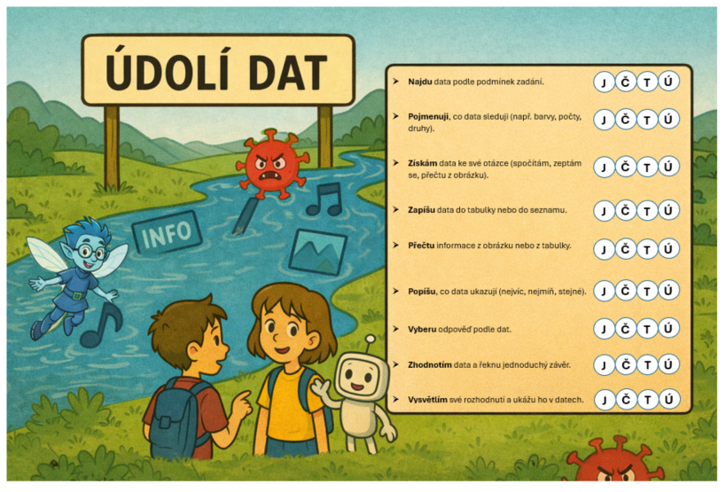

✨ Hlavní rozcestník
Tajemství Digiříše
Digiříše bývala krásná a chytrá země, ve které spolu žily data, roboti, technomágové i obyčejní lidé.
Všechno zde fungovalo díky tajemnému Datovému krystalu, který udržoval pořádek ve světech čísel, obrázků, modelů, programů a sítí.
Ale jednoho dne se objevil Chaotron – zlý virus, který se do Digiříše vplížil přes zakázanou bránu.
Chaotron je rychlý, zákeřný a hlavně… strašně rád poplete úplně všechno, na co sáhne!
Tvůj úkol
Projdi Digiříši, plň úkoly a pomoz vrátit řád do všech míst.
Jak začít
Vyber si jednu kartu. První je souhrnná karta Plán mého postupu.

Karty Digiříše
Rozcestník je nově v rozložení 5 × 2. První karta je výrazná souhrnná karta s 45 políčky a statistikou.